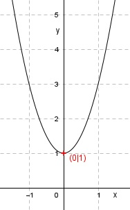

Aufgabe 9 Welche Koordinaten haben der Scheitelpunkt S und die Nullstellen N der folgenden Funktion? y = 2x2 + 1 Wertetabelle: x -2 -1 0 1 2 y 9 3 1 3 9 Es ist eine nach oben geöffnete, gestreckte Parabel (Zahl vor dem x² ist positiv und größer als 1). Sie ist symmetrisch zur y-Achse und hat ihren Scheitelpunkt, den tiefsten Punkt, bei S(0|1). S(0|1).  Da der Scheitelpunkt oberhalb der x-Achse liegt und die Parabel nach oben geöffnet ist, hat sie keine Nullstellen (Schnittpunkte mit der x-Achse).